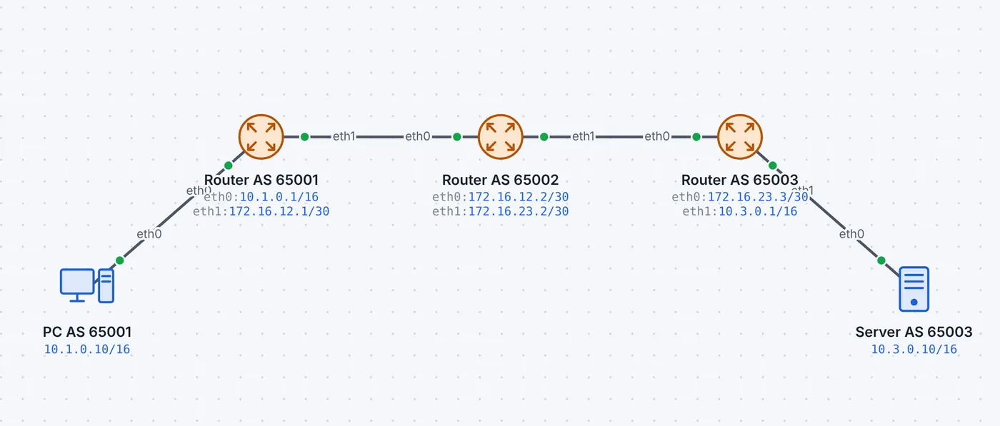
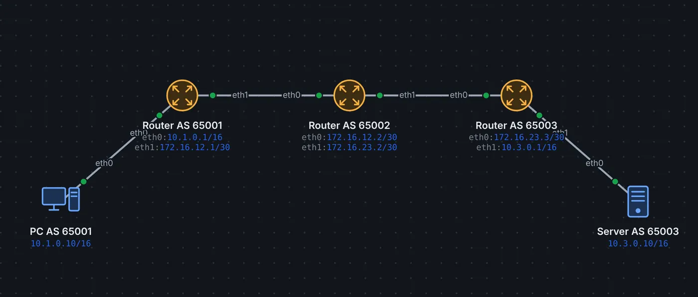

Im Internet betreibt jede Organisation (Provider, Hochschule, grosse Firma) ihr eigenes autonomes System (AS) mit einer AS-Nummer. Innerhalb nutzt sie OSPF oder Ähnliches. Zwischen den autonomen Systemen läuft BGP: Es kündigt an, welche Netze über welches AS erreichbar sind, und lässt jede Organisation nach eigenen Regeln entscheiden.
Ablauf
Zwei Router werden als Nachbarn konfiguriert und bauen eine TCP-Verbindung zu Port 179 auf.
OPEN: Sie tauschen AS-Nummer, Router-ID und Hold Time aus.
KEEPALIVE: hält die Verbindung am Leben.
UPDATE: kündigt Netze an (oder zieht sie zurück), jeweils mit dem AS-Pfad: der Liste der autonomen Systeme, über die das Netz erreichbar ist.
NOTIFICATION: meldet einen Fehler und beendet die Verbindung.
Bei mehreren Wegen gewinnt in leyoNET der kürzeste AS-Pfad. Findet ein Router seine eigene AS-Nummer im Pfad, verwirft er die Route: so entstehen keine Schleifen. Zwischen verschiedenen AS heisst die Verbindung eBGP, innerhalb iBGP.
Einrichten
Router(config)# router bgp 65001
Router(config-router)# neighbor 172.16.12.2 remote-as 65002
Router(config-router)# network 10.1.0.0/16
Router# show ip bgp summary
Router# show ip bgp
AS-Nummern von 64512 bis 65534 sind für private Zwecke reserviert, wie private IP-Adressen. Im Rechenzentrum dient BGP auch als Underlay für Leaf-Spine (Netzwerkdesign: Core, Distribution, Access).
So geht es in leyoNET
Derselbe Text wie in der Hilfe der App (Taste F1).
BGP
BGP verbindet autonome Systeme (AS), z.B. Provider und Firmen. Nachbarn werden von Hand eingetragen und sprechen über TCP Port 179: OPEN, KEEPALIVE, dann UPDATE mit den angekündigten Netzen und dem AS-Pfad.
eBGP zwischen verschiedenen AS, iBGP innerhalb eines AS
Der kürzeste AS-Pfad gewinnt
CLI: router bgp 65001, neighbor 10.0.0.2 remote-as 65002, show ip bgp summary.
Beispiel ansehen


BGP zwischen autonomen Systemen
Drei Provider (AS 65001–65003) tauschen ihre Netze aus.
BGP-Sitzungen über TCP 179, OPEN und UPDATE mit wachsendem AS-Pfad, danach Ping über alle drei Systeme.
Ein Rechenzentrum wie bei grossen Anbietern: zwei Spines, drei Leafs, jeder Leaf an beiden Spines. Das Underlay routet mit eBGP (jeder Leaf ein eigenes AS), das Overlay verlängert VLAN 10 (Web) und VLAN 20 (Datenbank) per VXLAN über alle Leafs.
Erst bauen die Switches ihre BGP-Sitzungen auf und lernen die Loopbacks. Dann pingt Web 1 den Server Web 2 und DB 1 den Server DB 2 – beide Male im selben Subnetz, aber über zwei Router-Sprünge. Filter «vxlan» oder «bgp».
«Live ansehen» öffnet das Netz in leyoNET, die Simulation läuft in einer Schleife. In der App findest du es unter Datei → Demo-Netze, mit Führung Schritt für Schritt.
Üben
★★★★★Zwei autonome Systeme mit BGP· 3 Ziele · Arbeitsblatt
★★★★★Rechenzentrum: Leaf-Spine mit BGP und VXLAN· 5 Ziele · Arbeitsblatt
In leyoNET unter Werkzeuge → Aufgaben-Katalog. Jede Übung prüft sich selbst.
Was leyoNET vereinfacht
Protokoll
Schicht
Vereinfachung in der Simulation
BGP-4
7
Binär über TCP 179: OPEN, KEEPALIVE, UPDATE, NOTIFICATION; Pfadwahl nach AS-Pfad-Länge; keine Policies
RFC 6793 – BGP Support for Four-Octet Autonomous System (AS) Number Space
Weiterlesen
OSPFLink-State-Routing: Nachbarn per Hello, Datenbank aller Verbindungen, kürzeste Wege nach Dijkstra – für IPv4 (OSPFv2) und IPv6 (OSPFv3).
Internet (Provider)Steht für den Provider und den Rest des Internets: öffentliche Adressen, Routing zwischen Kunden, DNS, CGNAT und DS-Lite.
Netzwerkdesign: Core, Distribution, AccessWarum grosse Netze in Schichten gebaut werden, wann ein Collapsed Core genügt und wie ein Rechenzentrum mit Leaf-Spine aussieht.